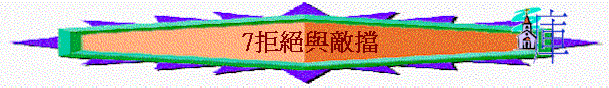

教師版
第七課：拒絕與敵擋
經文：太十一至十三章
引言：主耶穌在傳道的首年中工作記錄不多，在第二年的傳道工作中大受歡迎而得以擴展，也因此惹來猶太領袖的猜忌及仇視，在第二年末開始，主耶穌是不斷的被拒絕及受到猶太人的敵擋，他們雖是多次的看到神蹟，主耶穌也更多的宣稱祂是基督的身份，但無奈猶太人仍是硬著心的不信從主。
Ａ）約翰的被囚
太十一：２—１９
施浸約翰是主的先鋒，他按著 神給與他的使命──叫人悔改，迎接要來的基督，故他大力的斥責罪惡，甚至不徇情面的指責當時權貴的罪惡。當時的希律王娶了他弟弟的妻子希羅底為妻，施浸約翰直指他的罪惡，故施浸約翰被下入監中。希羅底雖恨惡而欲殺害施浸約翰，希律卻因百姓尊施浸約翰為先知（參太十四：
５），另方面因知道施浸約翰是義人，是聖人，所以敬畏他而保護他免受希羅底的殺害，可惜最後被希羅底使計來逼使希律殺害施浸約翰。他們棄絕王的先鋒，亦必會棄絕主耶穌。
主耶穌在那時（約翰仍被囚之時）為百姓感到哀嘆，以「結婚遊戲」及「出殯遊戲」來比喻當代的人；對施浸約翰的見證及主耶穌的呼召毫無反應。反倒因他們的作工方式不同而作出諸多的批評，以施浸約翰不喫不喝是被鬼附的，以主耶穌又喫又喝是貪食好酒的人，他們是硬心拒絕從 神而來的幫助（藉祂的僕人）。
Ｂ）主責備諸城
太十一：２０—３０
主耶穌在加利利諸城中是行了許多的異能及神蹟，是足以證明祂的身份及所傳的道，可是主耶穌感到極希奇，因為這些神蹟異能假若在昔日的推西及頓城或在所多瑪及蛾摩拉中行使，那些罪惡極大的人都會立刻悔改，他們竟然不理會主耶穌所傳的道，輕忽了所傳給他們的福音，主耶穌在傷痛中宣告他們的罪，又為他們的硬心而感悲哀。
Ｃ）無理的敵擋
太十二：１—５０
猶太的領袖們因嫉妒主耶穌而多方的尋找攻擊的話柄，從下述的經文中看到，他們是無時無的監視主耶穌，要在他的行為及話語上尋出把柄來敗壞主耶穌的名聲，又或抵擋主耶穌所作的工及所講的道。
１）關乎安息日
太十二：１—８
ａ）控告主門徒
門徒在安息日經過麥田，因著肚饑而搯麥穗喫，法利賽人找緊機會，要藉門徒所作的來攻擊主耶穌。（我們當留心不信的人敵擋主，也是從我們身上先著手。）但門徒在安息日搯麥穗喫是合乎律法的，因申廿三：２５說：「你進了鄰舍的站著的禾稼，可以用手摘穗子，不可以用鐮刀割取禾稼。」但猶太人按他們自己增添的條文，以門徒用手搯了麥就是收割麥穗，自以為是真理的捍衛者，以律法來質詢主耶穌，實為誣告及尋找把柄來控告主耶穌。
主耶穌卻以聖經中大衛與跟隨他的人喫陳設餅來反問法利賽人，指出 神及歷代的人都沒有以此事為違反 神的律法，可見律法不是死的規條，安息日的條例是為叫人享安息，沒有禁止人不可作出因正常合理需要而採取的行動。而且祭司在安息日作工是合 神心意，可見作工的精神及目的是否能榮耀是重要的。主耶穌本身是「比殿更大」的，祂是安息日的主，又是憐恤人的主，祂看到門徒得飽足而喜樂比法利賽人的形式主義更大，更指斥他們為何責備沒有違背律法的門徒呢？為何把他們當作有罪的呢？
ｂ）控告主耶穌
法利賽人利用一個枯乾了一隻手的人來作為試探主的工具，他們以求教的外表來掩蓋他們窺探主的惡意，為要藉主耶穌因愛心醫病而指證祂不守安息日之罪，因他們以在安息日中醫病為不對，但他們忽略了 神設立安息日的原意，在安息日以外加上了很多不合理的要求。
主耶穌指出安息日是為人設立的，是為了人的益處，不是叫人落入難處中，況且主是在安息日行善，這是可以的，故主耶穌把那個枯乾手的人治好。法利賽人竟在設立安息日的主前與主爭論安息日，並且欲控告主耶穌，他們是瞎眼到如斯地步，更商議要殺害主耶穌。
在主耶穌復活後，主耶穌設立了一個新的秩序，一個新的開始。故我們今日不用守安息日，而在主日中分別為聖，敬拜主，事奉主。
２）關乎主權柄
太十二：２２—３０
在主耶穌趕出啞吧鬼後，眾人認定祂就是大衛的子孫──彌賽亞，因怕眾人都跟隨主耶穌，法利賽人立刻誣告主耶穌是靠鬼王別西卜來趕鬼。他們故意不承認，反而歪曲事實，可見他們的罪是何等的深。
主耶穌卻指出他們的話是不合理及無知的，因一個國若自相紛爭必致分裂敗亡，連一般人都知的道理，何況智慧充足的撒但呢！主耶穌更嚴嚴的敬告不可犯褻瀆聖靈的罪──故意及惡意並恆久的抵擋 神感動，這樣的罪是永不得赦免的，因人把惟一叫他知道悔改的路都堵塞，人必須為這惡果負上責任。
３）關乎求神蹟
太十二：３８—４２
主耶穌那時已經行使了眾多的神蹟，足以證明祂的身份，可見他們再次的求神蹟是別有動機，其實是盤問主，想要試探祂。因為他們心存邪惡，根本不信主耶穌就是基督，既不相信，又要求神蹟，看了神蹟又不信，這不是試探主嗎？
主耶穌指出邪惡淫亂的世代是有罪，將來尼尼微人及南方女王將要起來定他們的罪，他們尚且因約拿及所羅門的話而有改變。因主的權柄比先知約拿大，主的智慧又比所羅門大，雖顯現在他們當中，他們還是惡意的不信，他們被定罪是應當的。
主耶穌又用比喻指出以色列現今雖被打掃乾淨，但因他們沒有接受主耶穌，將要招受比現今更痛苦的光景。因殺害主耶穌而被 神暫時棄絕，在天下萬國中被拋來拋去。又正因猶太人有這求天上顯神蹟的觀念，主耶穌在及後的橄欖山預言指出，日後的敵基督將要在天上顯大神蹟大奇事來，使選民都被迷惑，將要引至更大的禍患──錯把敵基督引入聖地而招受再次的亡國流亡的通苦及受史無前例的大逼害（從敵基督而來）。
４）關乎主身份
太十二：４６—５０
當主耶穌宣稱祂為 神的兒子，法利賽人或許用欺騙的方法找到主肉身的母親及弟弟妹妹們到來。（主耶穌肉身的弟弟妹妹此時仍未相信祂為彌賽亞，或會以主耶穌的宣稱太過份，而前來相勸。主耶穌被家人誤解成了我們可向主傾訴的根據！）為藉親情逼使主耶穌與他們相認，然後指出主耶穌只不過是木匠的兒子而不是彌賽亞，要在群眾的面前藉主耶穌片段的話語，加以擴大及註解來迷亂人的信心，要藉世俗的親情來混亂主的身份真是可惡的行徑。故主耶穌特意否認祂的親屬，以表明祂與猶太人斷裂關係。並宣告新的關係，就是凡接待祂的，祂就賜權柄給他們作神的兒女，參約一：１２。
Ｄ）用比喻講道
太十三章
從主對猶太人的講論中，我們看到主改用比喻，不似以前般清楚直接，因為比喻是用來甄別聽眾的品質，對愛慕真理的人來說，聽了真理便會使他們產生愛慕真理及追求真理的果效；但是對於不愛慕真理的人來說，比喻只不過是教訓中的一個有趣的插曲而已。另方面，由於人在聽比喻時，不是立刻明白，他們會較為多思索，這比直接講論較能有效地使人受主的啟迪。
請讀馬太十六：１３至十七：８，可八：２７至九：９，路九：８—３６
學生版
第七課：拒絕與敵擋
Ａ）約翰的被囚
太十一：２－１９
施浸約翰是主耶穌的先鋒，但人竟將他下在監中，最後還殺了他。他們棄絕王的先鋒，亦必會棄絕主耶穌。主耶穌為眾人的硬心而傷痛，因無論傳信息者是誰都遭受猶太人輕忽。
Ｂ）主責備諸城
太十一：２０－３０
主在他們中間多行神蹟及異能，若在舊約的日子，那些不信的外邦人能看到則早已悔改了，然而神的選民竟不理會主耶穌，輕忽了所傳給他們的福音，主在傷痛中宣告他們的罪。
Ｃ）無理的控告 太十二章
１）關乎安息日 太十二：１－８
ａ）控告主門徒
門徒在安息日搯麥穗喫是合乎律法的，申廿三：２５「你進了鄰舍的站著的禾稼，可以用手摘穗子，不可以用鐮刀割取禾稼。」但猶太人以門徒用手搯了麥就是收割麥穗，實為誣告及尋找把柄來控告主。
ｂ）控告主耶穌 太十二：９－１４
利用主耶穌對病人的愛心來尋找控告主的把柄，主耶穌指出安息日是為人設立的，是為了人的益處，不是叫人落入難處中，況且主是在安息日行善，這是可以的。他們竟在設立安息日的主前與祂爭論安息日，可見他們的心眼早已瞎了，更商議殺主耶穌。在主耶穌復活後，主耶穌設立了一個新的秩序及新的開始。故今日不用守安息日，而在主日中分別為聖，敬拜主，事奉主。
２）關乎主權柄
太十二：２２－３０
為害怕人跟從主，他們竟誣告主耶穌是靠鬼王別西卜來趕鬼，他們的罪是何等的深。主耶穌卻指出他們的話是不合理及無知的，因一國自相紛爭必致分裂敗亡，連一般人都知的道理，何況智慧充足的撒但呢！
３）關乎求神蹟
太十二：３８－４２
因為他們心存邪惡，根本不信主耶穌就是基督，既不相信，又要求神蹟，看了神蹟又不信，這不是試探主嗎？主耶穌指出邪惡淫亂的世代是有罪，主耶穌權柄比先知約拿大，智慧又比所羅門大，雖顯現在他們當中，他們竟還硬心不信，他們被定罪是應當的。
４）關乎主身份
太十二：４６－５０
法利賽人找到主肉身的母親及兄弟姊妹們來，是要令主耶穌與他們相認，然後指出主只不過是木匠的兒子；並不是彌賽亞，藉世俗的親情來混亂主的身份。故主穌特意否認祂的親屬，以表明祂與猶太人斷關係。並宣告新的關係，就是凡接待祂的，祂就賜權柄給他們作神的兒女，參約一：１２
Ｄ）用比喻講道
太十三章
從主耶穌對猶太人的講論中，我們看到祂改用比喻，不似以前般清楚直接，因為比喻是用來甄別聽眾的品質，對愛慕真理的人來說，聽了真理便會使他們產生愛慕真理及追求真理的果效；但是對於不愛慕真理的人來說，比喻只不過是教訓中的一個有趣的插曲而已。另方面，由於人在聽比喻時，不是立刻明白，他們會較為多思索，這比直接講論較能有效地使人受主的啟迪。
請讀馬太十六：１３至十七：８，可八：２７至九：９，路九：８－３６